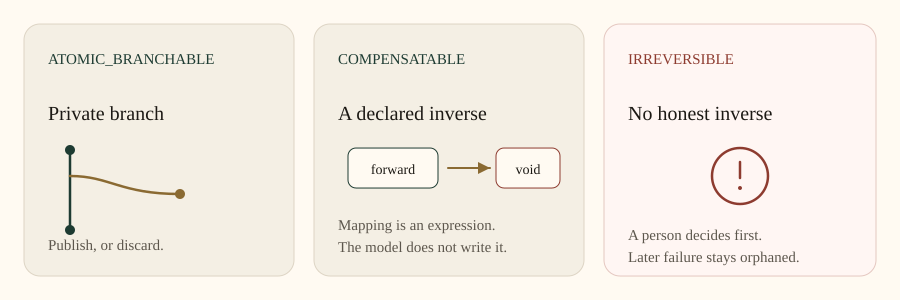

Lesson 01

The 2026-07-28 Model Context Protocol is stateless. A request carries io.modelcontextprotocol/protocolVersion and io.modelcontextprotocol/clientCapabilities in _meta. Tools are described with JSON Schema 2020-12. That is enough to invoke a function. It is not a transaction.
readOnlyHint, destructiveHint, and idempotentHint are untrusted annotations. An agent, or a compromised tool catalog, can claim a charge is read-only.tools/call, MCP does not define a deduplication key. The second call can transfer the inventory again.Every mutating tool in a Reverta manifest is one of these. The model cannot pick a different class at call time. The signed manifest is the authority.
| Class | Meaning | Example |
|---|---|---|
| ATOMIC_BRANCHABLE | The mutation can run on an isolated branch and be published or discarded. | A ledger transfer, a lakehouse write. |
| COMPENSATABLE | There is a deterministic inverse call. The mapping is an expression over the forward input and output. | void_dispatch after dispatch_carrier. |
| IRREVERSIBLE | There is no honest inverse. The engine pauses for a person before the live call, and a later failure marks the effect orphaned instead of pretending it was undone. | Sending a wire, sending an email. |
The proxy speaks ordinary JSON-RPC. A Spring AI 2.1 client, a Python script, or a STDIO agent all land on the same coordinator. Before a live mutation, the engine writes the intent to a write-ahead log. After a failure, it walks completed steps in reverse topological order and compensates each one.
ROLLED_BACK. A protocol error is reserved for a request the engine will not even attempt.Next: run the demo and watch a carrier failure undo two branches.